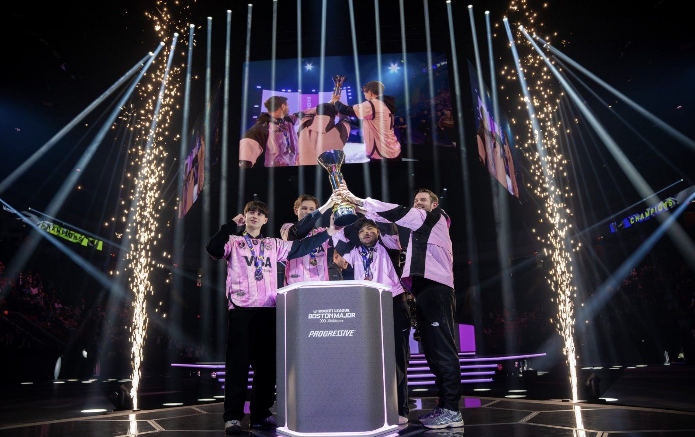

Gentle Mates remporte le Major de Boston RLCS 2026 face à Team Vitality

La structure française M8 a marqué l’histoire de l’esport en remportant le Major de Boston, l’un des tournois les plus prestigieux de la scène internationale. Devant un public survolté réuni à Boston, l’équipe a livré une performance impressionnante, faisant preuve d’un sang-froid et d’une cohésion remarquables tout au long de la compétition.
Opposée aux meilleures formations mondiales, M8 a su déjouer les pronostics grâce à une stratégie parfaitement maîtrisée et des performances individuelles décisives lors des moments clés. La finale, particulièrement intense, a tenu les spectateurs en haleine jusqu’aux dernières manches, avant que les joueurs français ne s’imposent avec autorité.
Cette victoire au Major de Boston représente une étape majeure pour la structure et pour l’esport français en général. Elle confirme la montée en puissance de M8 sur la scène internationale et inscrit son nom parmi les grandes équipes de l’histoire du Major.